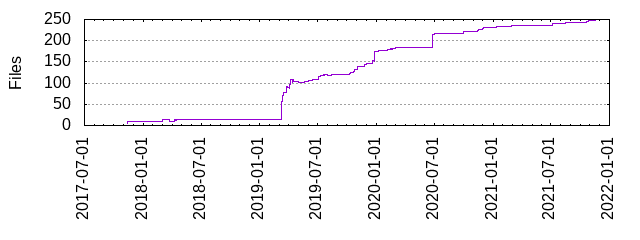

Files
- Total files
- 250
- Total lines
- 34313
- Average file size
- 21665.24 bytes

| Extension | Files (%) | Lines (%) | Lines/file |
|---|
| 76 (30.40%) | 3023 (8.81%) | 39 |
| bat | 1 (0.40%) | 104 (0.30%) | 104 |
| bzl | 37 (14.80%) | 7506 (21.88%) | 202 |
| conf | 2 (0.80%) | 8 (0.02%) | 4 |
| dos | 1 (0.40%) | 9 (0.03%) | 9 |
| golden | 3 (1.20%) | 4 (0.01%) | 1 |
| jar | 16 (6.40%) | 17522 (51.07%) | 1095 |
| java | 38 (15.20%) | 3321 (9.68%) | 87 |
| json | 13 (5.20%) | 17751 (51.73%) | 1365 |
| kt | 2 (0.80%) | 48 (0.14%) | 24 |
| md | 14 (5.60%) | 1505 (4.39%) | 107 |
| proto | 2 (0.80%) | 20 (0.06%) | 10 |
| scala | 6 (2.40%) | 109 (0.32%) | 18 |
| sh | 9 (3.60%) | 317 (0.92%) | 35 |
| tpl | 1 (0.40%) | 13 (0.04%) | 13 |
| txt | 2 (0.80%) | 34 (0.10%) | 17 |
| unix | 4 (1.60%) | 13 (0.04%) | 3 |
| xml | 21 (8.40%) | 246 (0.72%) | 11 |
| yml | 2 (0.80%) | 277 (0.81%) | 138 |